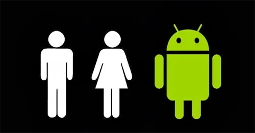

Provavelmente voce sabe que o sistema Android, mantido pelo Google é um dos mais utilizados para dispositivos moveis em todo o mundo. Mas talvez voce nao saiba que o seu simpatico mascote tem um nome e uma historia curiosa. Pois acompanhe esse artigo para aprender muita coisa sobre esse robozinho.
Historia do mascote
Primeira versao
A primeira tentativa de criar um mascote surgiu em 2007 e veio de um desenvolverdor chamado ele conta que abriu o linkspace (software livro para virtualizacao de imagem ) e criou sua propria versao de robo. O obejctivo era apenas personificar o sistema apenas para a sua equipe, nao existia nenhuma solicitacao da empresa para a criacao de uma mascote.
.png)
essa primeira versao foi batizada em homenagem ao seu criador. Seriam os Dandroids
Surgimento de um novo mascote
A ideia de ter mascote foi amadurecendo e a missao foi passada para uma profissional da area. A ilustradora Russa Irina Blok tambem funcionaria do Google ficou com a missao de representar o pequeno robo de uma maneira agradavel.

A ideia principal da Irina era representar tudo graficamente com poucos tracos e de forma mais chapada. O desenho tambem deveria gerar identificacao rapida com quem o olha. Surgiu entao o Bugdroid, o novo mascote do Android.
A principal inspiracao para os tracos do novo Bugdroid veio daqueles bonequinhos que ilustram portas de banheiro para indicar o genero de cada ponta. Conta a lenda que a artista estava criando em sua mesa no escritorio do Google e olhou para o lado dos banheiros e a identificacao foi imediata simples, limpo, objetivo.
Quer aprender mais?
Outro assunto curioso em relacao ao Android é que cada versao sempre foi nomeada em homenagem a um doce, em ordem alfabetica a partir da versao 1.5 ate a 9.0
- Cupcate
- Donut
- Eclair
- Gingerbread
- Honeycomb
- Ice Cream Sandwich
- Jelly Bean
- Kitkat
- Lolipop
- Marsmallow
- Nougat
- Oreo
- Pie
Infelizmente o Android Q nao existiu, pois o Google resolveu por fim a essa divertida pratica e comecou, o que deu origrm aoAndroid 10.
Acesse aqui o site Android History para conhecer a sequencia das versoes "adocicadas" e o que cada uma trouxe para o sistema Android